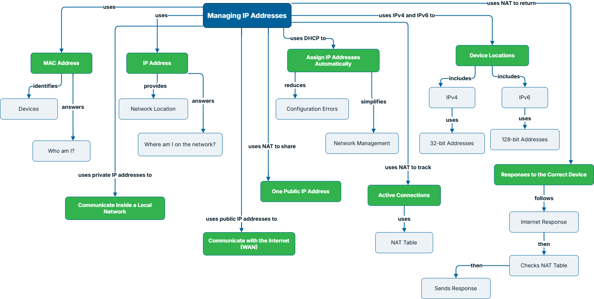
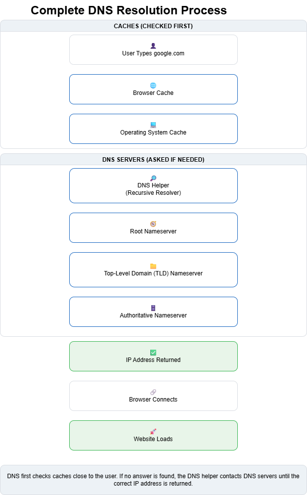
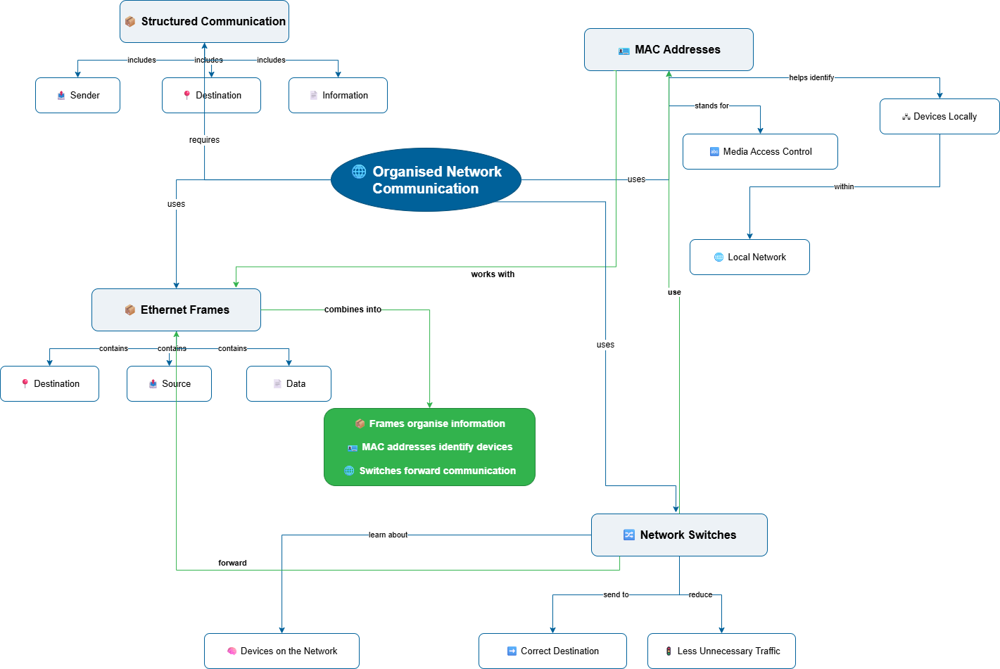

Synchronous · Data Analytics
Inferential Statistics
A 90-minute live session focused on sampling methods, confidence intervals, and applied reasoning with Python.
View artifactI design learner-centered experiences that translate complex technical concepts into structured, visual, interactive, and scenario-based learning.
Each project uses a different combination of learning strategy, technical depth, facilitation, and media to support the learner's task.
A 90-minute live session focused on sampling methods, confidence intervals, and applied reasoning with Python.
View artifactA self-paced technical module on AI-assisted CI/CD automation, scripting, and evaluating AI-generated code risks.
View moduleA multi-format learning experience combining interactives, visual models, video, and troubleshooting practice.
Explore case studyNetworking processes are often invisible and abstract. This learning experience makes those processes visible, breaks complexity into manageable steps, and gives learners opportunities to reason through technical situations rather than memorize terminology.
Help novice learners build a mental model of how data moves through networks without overwhelming them with terminology or invisible backend processes.
Use progressive disclosure, visual mapping, familiar analogies, learner-controlled exploration, and scenario-based reasoning to move from recognition to application.
Browser-based learning objects let learners inspect processes step by step and control the pace of exploration.
A guided journey through the sequence behind loading a secure webpage.
A learner-controlled exploration of TCP/IP layers with focused explanations and progress feedback.
A step-by-step visualization of how a domain request progresses through DNS toward an IP address.
A branching troubleshooting experience in which learners make decisions using technical evidence. Presented here as a walkthrough so reviewers can see the decision flow without access to the original learning platform.
Concept maps make relationships explicit so learners can see how addressing, switching, DNS, and network communication connect.
Connects MAC/IP addressing, DHCP, IPv4/IPv6, NAT, active connections, and return traffic.

Separates local cache checks from external DNS lookups to make the resolution path easier to follow.

Shows how structured communication, Ethernet frames, MAC addresses, and switches work together.

Short visual explanations use comparison and analogy to make abstract networking behavior more concrete.
Explains why packet switching supports shared network use.
Explains how frames, addressing, and switching help communication reach the correct destination.
My work combines learning design, technical understanding, multimedia production, and interaction design.